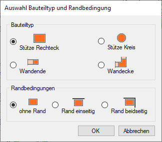
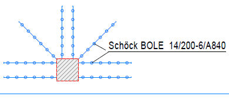
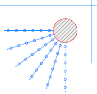
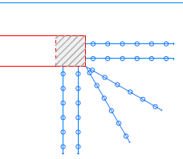
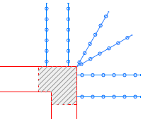

")
")

Sie können anhand der statischen Bemessung Dübelleisten an verschiedenen Bauteilen verlegen. Zur Auswahl stehen rechteckige und runde Stützen sowie Wandenden und -ecken.
Auswahl Bauteiltyp und Randbedingungen
 |
Bauteiltyp
Wählen Sie den Bauteiltyp, den Sie bewehren möchten.
Bauteiltyp |
|
|---|---|
Stütze Rechteck |
Beispiel: Rand einseitig  |
Stütze Kreis |
Beispiel: Rand beidseitig  |
Wandende |
Beispiel: mit Öffnung  |
Wandecke |
keine Randbedingung wählbar  |
Randbedingungen
Die verfügbaren Randbedingungen sind abhängig vom gewählten Bauteiltyp. Wählen Sie die Randbedingung und bestätigen Sie mit OK.
ohne Rand
Die Dübelleisten werden an allen Kanten des Bauteils verlegt.
Rand einseitig
Die Dübelleisten werden an der angeklickten Kante nicht verlegt.
Rand beidseitig
Die Dübelleisten werden an den zwei zu definierenden Kanten nicht verlegt.
Rand Öffnung (nur bei Wandende)
Die Dübelleisten werden an der angeklickten Kante (Wandseite) nicht verlegt.
Zugehörige Aufgaben:
·Dübelleiste an einem Rechteck verlegen
·Dübelleiste an einem Kreis verlegen
·Dübelleiste an einem Wandende verlegen
·Dübelleiste an einer Wandecke verlegen
Zugehörige Referenzen: